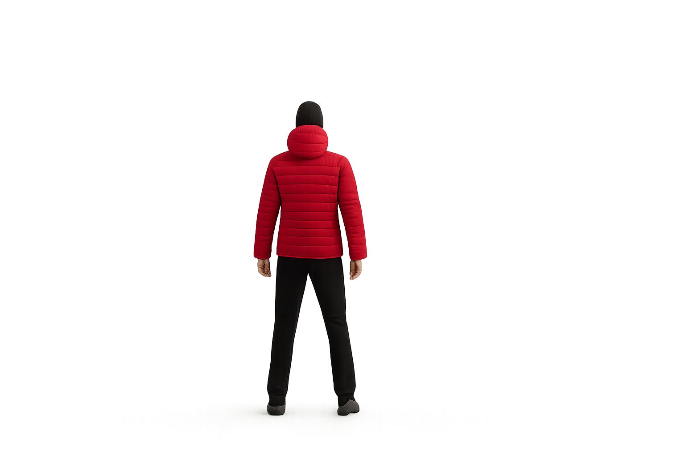
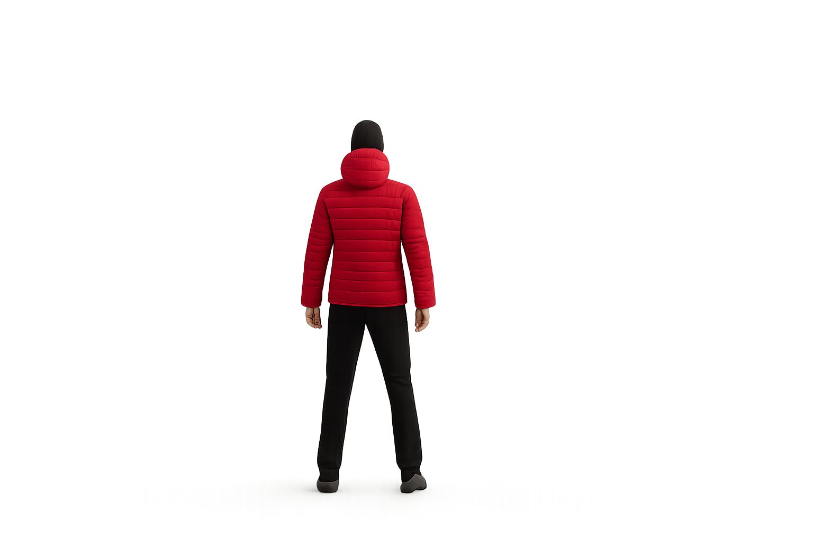

ADVENTURE
ADVENTURE TIME
Adventure Time is the spark that ignites the explorer’s soul—a time when the ordinary falls away and every horizon becomes a promise. It’s the thrill of setting out before dawn, the world hushed beneath a sky still faint with stars, and the joy of chasing sunlight over hills and valleys. In those moments, you trade the familiar for the unknown: winding trails through misty forests, secret coves where waves whisper against hidden shorelines, and mountain peaks that paint the sky in ever-changing hues. Adventure Time is the laughter around campfires, the pulse of wind on your face, and the quiet pride of overcoming a challenge you once thought impossible. It reminds us that life’s richest stories are written not in comfort, but in bold leaps, open hearts, and the endless wonder of the journey.
BIKING
Biking is a beautiful symphony of motion, freedom, and discovery. With every turn of the pedals, you break away from the noise of the world and slip into a rhythm that feels almost timeless. The road stretches out ahead like an invitation, winding through bustling cities, silent forests, golden fields, and rugged mountains. The breeze kisses your face, the tires hum against the earth, and every heartbeat matches the pulse of adventure. Biking is not just a journey across landscapes — it's a journey inward, teaching patience, perseverance, and the pure, simple joy of moving under your own power. Whether you're chasing the sunrise along empty roads or weaving through trails lit by dappled sunlight, biking is a celebration of strength, spirit, and the endless beauty waiting just beyond the next turn.
PARAGLINDING
Paragliding is the dream of flight made real — a graceful dance between earth and sky. With just a simple wing and the breath of the wind, you lift into the open air, weightless and free, soaring over mountains, rivers, and fields that stretch endlessly beneath you. It’s a feeling like no other: the rush of takeoff, the quiet peace of gliding, the heart-stirring beauty of the world from above. Paragliding isn’t just an adventure; it’s a surrender to the skies, a trust in the invisible currents, and a reminder that true freedom lives not in reaching new heights, but in embracing the journey with open arms and an open heart.
SURFING
Surfing is a timeless dance between human spirit and the vast, breathing ocean. It’s the art of reading the rhythm of the waves, feeling their pulse beneath your feet, and surrendering to their power with grace and courage. Each ride is a fleeting moment of pure freedom, where the world fades away, and it’s just you, your board, and the endless horizon. The salty breeze, the golden sun, the roar of the waves — they all weave together into an unforgettable symphony. Surfing is not just a sport; it’s a meditation, a celebration of life, and a profound reminder that the most beautiful things are often the ones we cannot control, only embrace.